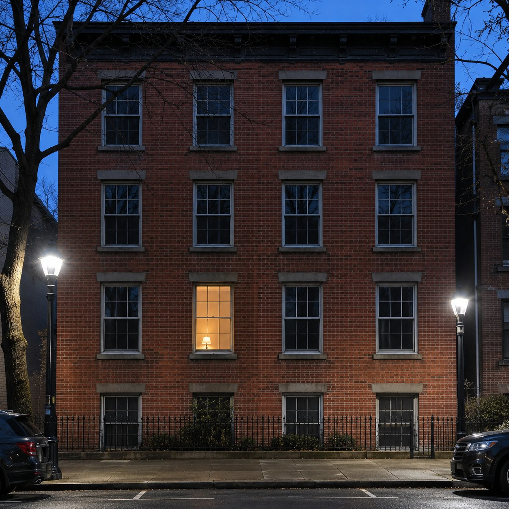
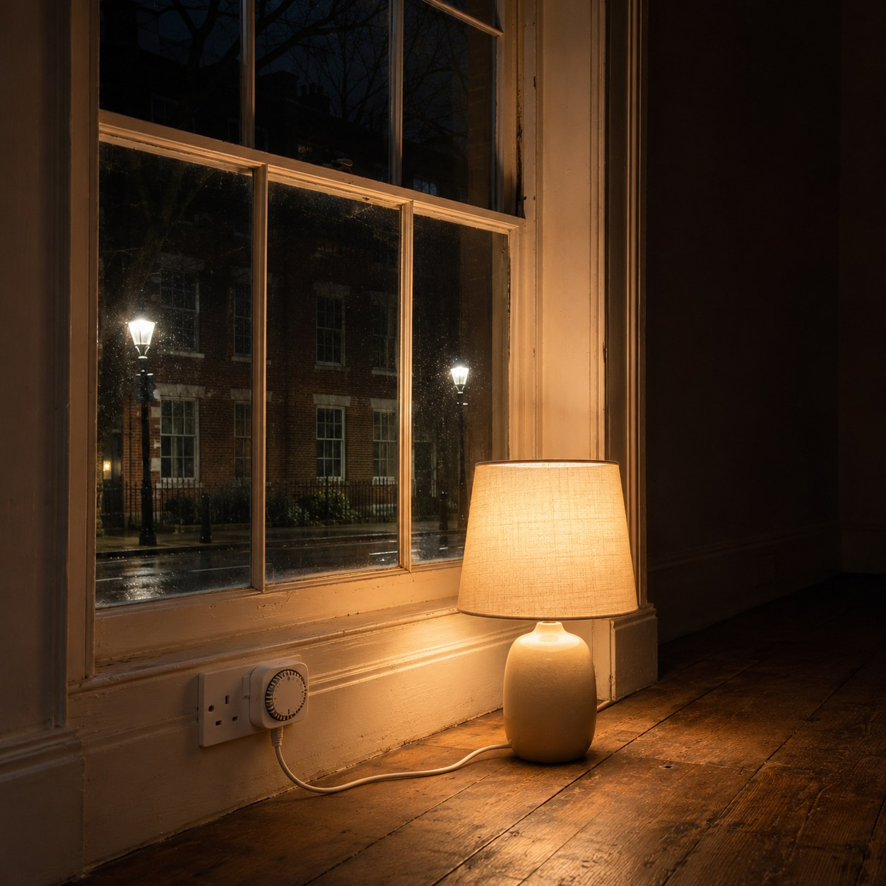

Lit for the Street


Edward Hopper painted Night Windows in 1928: a lit room seen from outside, a woman half glimpsed inside it, a curtain lifting at the open window. We stand where the painter stood, out in the dark, and make up her whole evening from a few squares of yellow.
From November to March I kept a lamp burning in the front window of an empty flat. The flat was between tenants, the boards bare, nothing on the walls. A plug-in timer switched the lamp on at dusk and off at a quarter past eleven, as if someone had gone to bed.
No one lived there. Every evening, someone did.
A lit window is not really part of a home. It is the part of a home addressed to strangers. Whoever is inside never sees it; they see the room. The yellow square belongs to the street, to people walking back from the station with their keys already in their hands, who look up without deciding to and feel, for a second, that the building is full.
What were they believing in? Not a person. A habit of light. The timer did nothing a person does except the one thing the street could see, and the street asked for nothing more.
I went in once, late in January, after the lamp had clicked on. The room was cold. The lamp stood on the floor by the glass, lighting the window, a strip of skirting board and nothing else. Down on the pavement a man stopped to light a cigarette, glanced up, and walked on.
From inside, I could not see what he saw.